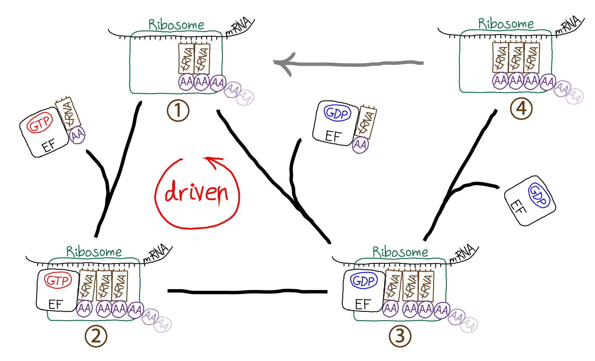
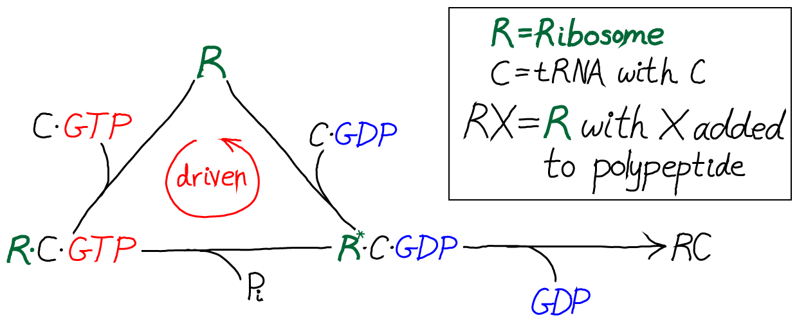
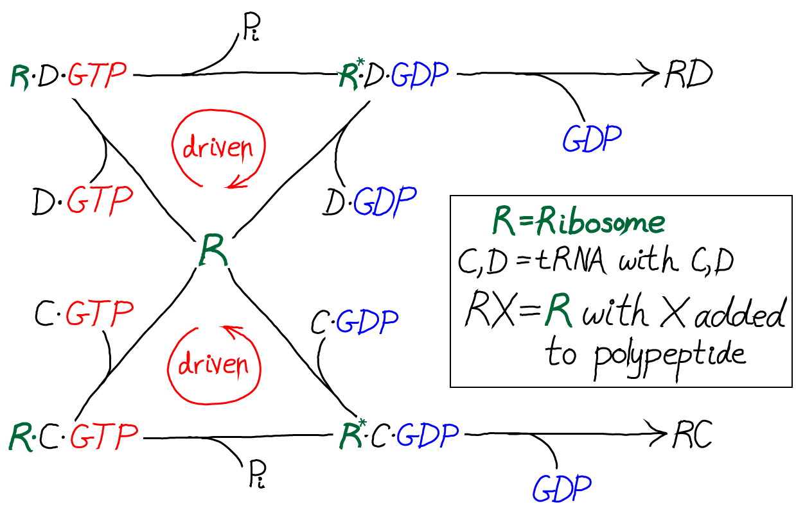
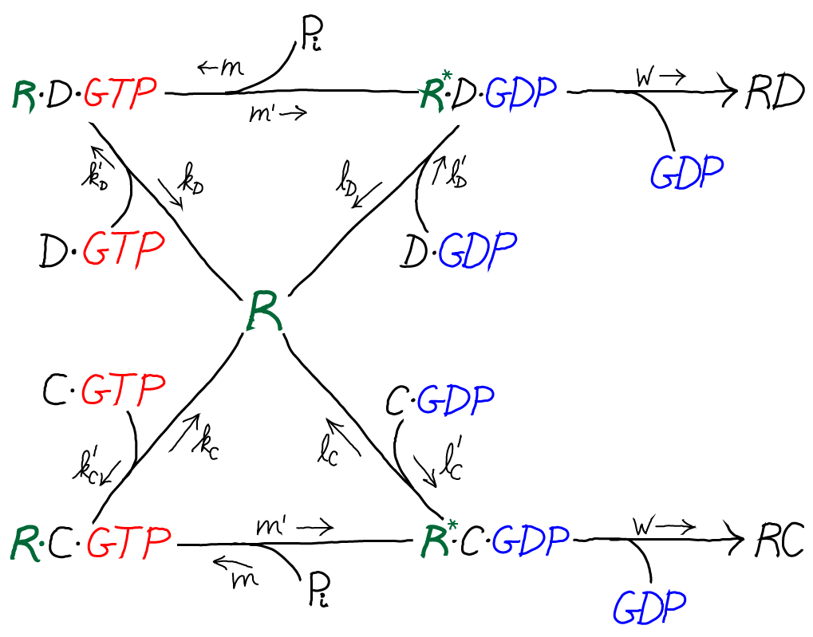
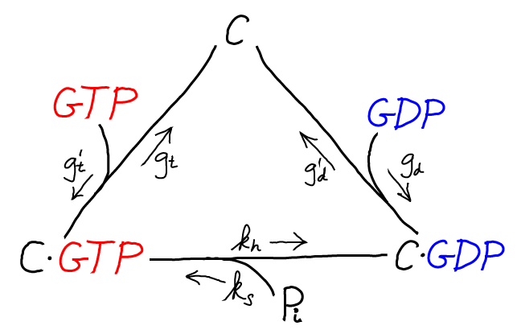
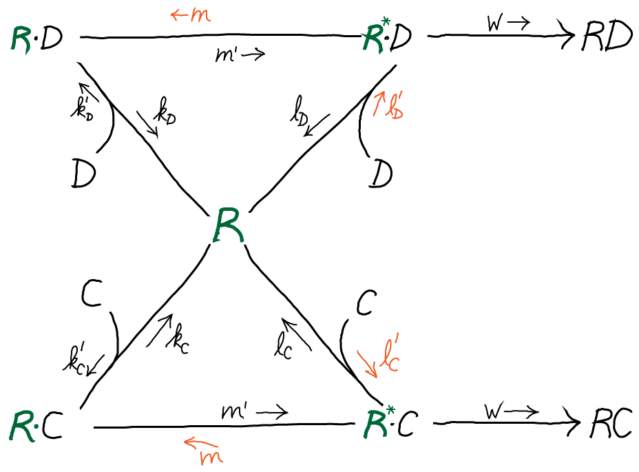
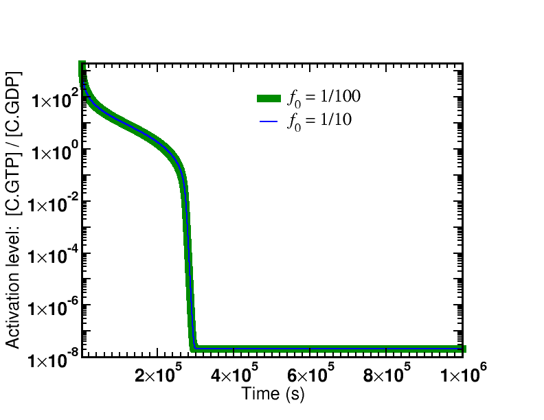
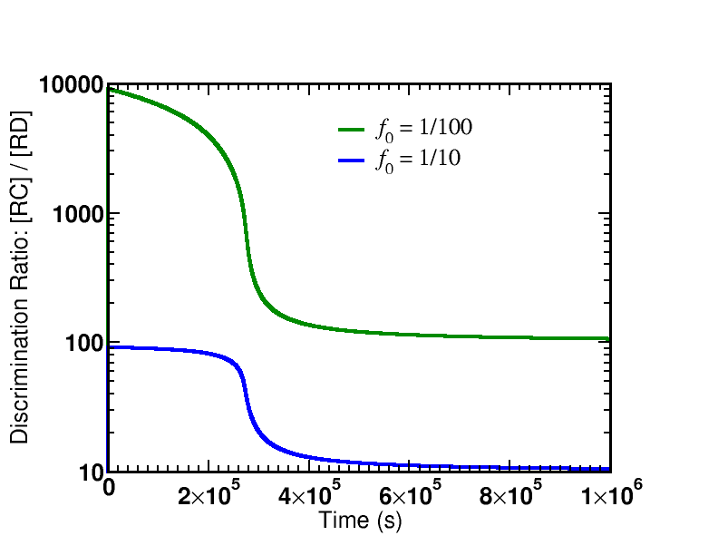

We will study proofreading which occurs in the translation process - in the synthesis of protein based on an mRNA sequence. The source of free energy turns out to be the activated carrier GTP rather than ATP.

The figure schematically demonstrates the translation process occuring in a cell. The ribosome is the molecular machine responsible for translation. Starting in the upper left (state 1), the ribosome links a tRNA molecule bound with an amino acid (AA) to a complex including the preceding two tRNA molecules and the growing polypeptide chain. The incoming tRNA/AA molecules are complexed to an EF protein which is also bound to GTP. GTP hydrolysis drives the cycle in a counter-clockwise direction, adding a step (state 2) to the process which seems to be extraneous. In fact, the extra step is what makes proofreading possible by permitting a second opportunity for unbinding of tRNA/AA from the ribosome - which ultimately aids discrimination between correct and incorrect amino acids. From state 3, the polypeptide chain is extended by the formation of a covalent bond to the new AA; EF/GDP unbinds and the system yields state 4 which cannot receive a new tRNA/AA because the binding site is occupied. In a driven multi-step process not shown (grey arrow) the ribosome also translates the peptide chain and three tRNA molecules to the right, ejecting the rightmost tRNA which was added earliest.This subtle process is best studied with a specific model. We can construct a tractable model for driven/kinetic proofreading by slightly simplifying the process sketched above.

In this kinetic scheme, we have omitted the EF protein but retained GTP, which is critical as the activated carrier providing the driving force for proofreading. We have also further simplified the final step of covalent addition of the amino acid. The symbol "C" should be thought of as the correct amino acid, in contrast to the wrong amino acid "D" shown in the full model below.

Only by including the dual cycles with both C and D can we assess the discriminatory power of the model. That is, we will not to know the relative likelihoods for C and D to be incorporated into the polypeptide chain. And proofreading is discrimination.

The model is specified according to the rates in the diagram above, where the notation follows Hopfield's paper. It is a standard mass action model: letters besides $k$ are used for the rate constants of different processes to avoid excessive sub- and super-scripts. The model has the following features and assumptions, again following Hopfield:You should recognize that, as with any cycle, there is a constraint which ensures thermodynamic consistency, so that only five of six rates are independent. This will be discussed further below.

The C/GTP cycle is driven by the cell's continual synthesis of GTP. GTP is an activated carrier and its cellular concentration far exceeds its equilibrium value relative to the hydrolysis products GDP and Pi. An analogous cycle, with identical rate constants, is assumed for D/GTP binding and hydrolysis.
The rates shown in orange will later be used to model driving.First, let's consider the cycle "as is" with all rates/processes included. Because the rate $w$ is so slow (see above) and there is no driving, the cycles can be considered to be in equilibrium. In other words, all the processes happen so fast compared to the $w$ process that their relative populations are essentially equal to the equilibrium values. In this model, the equal availability of the two amino acid complexes amounts to assuming $\conc{C} = \conc{D}$.
Our goal is to calculate the discrimination ratio of correct (C) incorporation by the $w$ process to incorrect (D) incorporation in a steady state: \begin{equation} \label{discrim} \frac{ \conc{RC} }{ \conc{RD} } = \frac{ \conc{\rstarc} \, w }{ \conc{\rstard} \, w} = \frac{ \conc{\rstarc} }{ \conc{\rstard} } \end{equation} In the scenario just described, it is straightforward to solve for $\conc{\rstarx}$ using detailed balance along the right leg of each cycle. For the C cycle, we have $\conc{R} \conc{C} \, l'_C = \conc{\rstarc} \, l_C$ and similiar for D. Substituting into \eqref{discrim} and using assumptions stated above, we find \begin{equation} \label{undriven} \frac{ \conc{RC} }{ \conc{RD} } = \frac{ l'_C \, l_D }{ l_C \, l'_D } = \frac{ l_D }{ l_C } = \frac{1}{f_0} \end{equation} In other words, in this undriven scenario, discrimination occurs according the ratio of unbinding rates, which in turn is just the ratio of equilibrium dissociation constants because the on-rates are the same: see the discussion of binding.Procedurally, we will pursue a steady state analysis. We cannot use a quasi-equilibriium analysis, as we did for the undriven case, because we have explicitly put a net flow into the cycles by setting rate constants to zero.
In steady state, the net flow into every state balances the net flow out. For the $\mathrm{\rstarc}$ state, we have \begin{equation} \label{steadyrstarc} \conc{\rdotc}\, m' = \conc{\rstarc} \left( l_C + w \right) \simeq \conc{\rstarc} \, l_C \end{equation} where we used our assumption of very small $w$. The steady-state condition for the $\mathrm{\rdotc}$ state is \begin{equation} \label{steadyrdotc} \conc{R}\conc{C} \, k'_C = \conc{\rdotc} \left( k_C + m' \right) \simeq \conc{\rdotc} \, k_C \end{equation} where we again used one of our original assumptions that $m' \ll k_C$. Exactly analogous results are obtained for the D process.
We can combine the C and D steady state results to obtain the overall discrimination ratio. We use the preceding steady-state equations to solve for $\conc{\rstarc}$ in terms of $\conc{R}\conc{C}$, and similarly for D. From these steps we can obtain \begin{equation} \label{drivendiscrim} \frac{ \conc{RC} }{ \conc{RD} } = \frac{ \conc{\rstarc} }{ \conc{\rstard} } \simeq \frac{ k'_C \, l_D \, k_D }{ l_C \, k_C \, k'_D } = \frac{1}{{f_0}^2} \end{equation} where we used the original assumption $k'_C = k'_D$.
The driven discrimination ratio \eqref{drivendiscrim} is dramatically improved compared to the undriven case \eqref{undriven}, when we recall that $f_0 < 1$. In a cellular context, $f_0$ can be as small as $1/100$ (see book by Alon) making driven proofreading 100 times better! Although we derived \eqref{drivendiscrim} using apparently unphysical assumptions, Hopfield has shown the same result is obtained from a full steady-state analysis. Our numerical data on the full model, below, are also consistent with the result.
 
The first graph shows the time course of the de-activation of $\cgtp$, which is identical for both affinity ratios. The system is started in a highly activated non-equilibrium state and relaxes toward equilibrium.There are two key lessons from the figures plotting the discrimination ratio $\conc{RC} \left/ \conc{RD}\right.$: (i) The degree of discrimination decreases over time as GTP becomes de-activated, which is what we would expect. (ii) The discrimination ratio goes from a nearly maximal initial value $\sim 1/{f_0}^2$ as predicted by our simple analysis to the equilibrium value of $\sim 1/f_0$. Although it is not shown in the graphs, more than one GTP hydrolysis occurs per successful addition of amino acid in both cases.
The simulation data shown corresponds to an initial condition relaxing toward equilibrium, but it certainly is possible to run a non-equilibrium steady-state simulation in which GTP stays activated and the proofreading remains driven/active. This could be achieved by mimicking the cell's continual synthesis of GTP from GDP and Pi in a one-way reaction.
Rate constants for the model are specified below. Initial conditions were $\conc{GTP} = 10^{-3}$M, $\conc{GDP} = \conc{Pi} = 10^{-6}$M, $\conc{C} = \conc{D} = 10^{-4}$M, with 1,000 ribosomes (R). Simulations were performed using BioNetGen, a rule-based platform for kinetic modeling. The source code for the model (a .bngl file) can be downloaded by right-clicking here.
| Process | Symbol | Value |
|---|---|---|
| Reference on-rate | $\kon$ | $10^8$ / (M s) |
| Reference off-rate | $\koff$ | $100$ / s |
| Affinity ratio | $f_0$ | Adjustable parameter |
| $\cgtp$ binding | $k'_C$ | $\kon$ |
| $\cgtp$ unbinding | $k_C$ | $\koff$ |
| $\cgdp$ binding | $l'_C$ | $0.01 \, \kon$ |
| $\cgdp$ unbinding | $l_C$ | $\koff$ |
| GTP hydrolysis (Rib.) | $m'$ | $0.1 \, \koff$ |
| GTP synthesis (Rib.) | $m$ | cycle constraint (below) |
| Amino acid attachment | $w$ | $0.001 \, \koff$ |
| $\dgtp$ binding | $k'_D$ | $\kon$ |
| $\dgtp$ unbinding | $k_D$ | $\koff \left/ f_0\right.$ |
| $\dgdp$ binding | $l'_D$ | $0.01 \, \kon$ |
| $\dgdp$ unbinding | $l_D$ | $\koff \left/ f_0\right.$ |
| GTP binding | $g'_t$ | $\kon$ |
| GTP unbinding | $g_t$ | $\koff$ |
| GDP binding | $g'_d$ | $g'_t$ |
| GDP unbinding | $g_d$ | $10 \, \koff$ |
| GTP hydrolysis (aux.) | $k_h$ | $10^{-8} \, \koff$ |
| GTP synthesis (aux.) | $k_s$ | cycle constraint (below) |
We therefore turn to the auxiliary cycle of C + GTP binding. From the detailed balance conditions, the constraint one finds is \begin{equation} \label{constraint_aux} \frac{ g_d \, k_h \, g'_t }{ g'_d \, k_s \, g_t } = \frac{ \conc{GDP} \conc{Pi} }{ \conc{GTP} } = \kgtp \end{equation} where the right-hand side is the GTP hydrolysis equilibrium constant. However, we can also look directly at the detailed balance condition for GTP hydrolysis to find \begin{equation} \label{equil_cgtp} \frac{ k_h }{ k_s } = \frac{ \conc{\cgdp} \conc{Pi} }{ \conc{\cgtp} } \end{equation}
To get the relations into a useful form, we solve for the left-hand side of \eqref{equil_cgtp}, namely $k_h / k_s$, from \eqref{constraint_aux} and subtitute the result back into \eqref{equil_cgtp} to obtain \begin{equation} \label{combo_constraint} \frac{ \conc{\cgdp} \conc{Pi} }{ \conc{\cgtp} } = \kgtp \frac{ g'_d \, g_t }{ g_d \, g'_t } \end{equation} This the result we want because it expresses the $\cgtp$ equilibrium constant in terms of a known equilibrium constant and rates from the model. Finally, we re-write \eqref{constraint} using \eqref{combo_constraint} as \begin{equation} \label{final_constraint} \frac{ l_C \, k'_C \, m' }{ l'_C \, k_C \, m } = \kgtp \frac{ g'_d \, g_t }{ g_d \, g'_t } \end{equation}
Equations \eqref{constraint_aux} and \eqref{final_constraint} are the constraints used to define missing model parameters, along with $K_{\mathrm{GTP}} = 5 \times 10^5$ M. The constraint for the R + $\dgtp$ cycle is analogous to \eqref{final_constraint}.